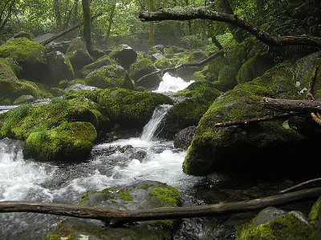
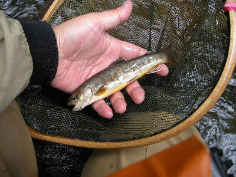
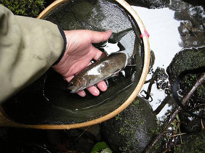
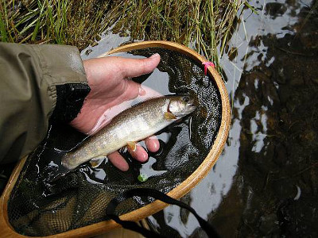
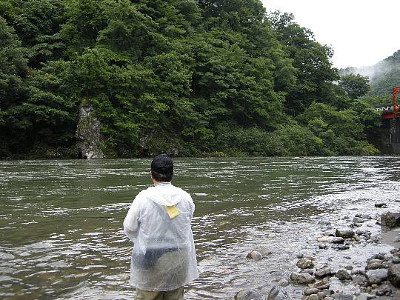

釣行日誌 故郷編
2009/7/17 つゆのあとさき
４時40分に目覚まし時計をセットしたのだが、４時に目が覚めた。もう一眠りしようと思うが、目は完全に冴えてしまっている。ごそごそと起き出して、釣りの支度をしていると、壁のカレンダーが、バサリと落ちる。何か不吉な予感がした。
朝刊を配るバイクの音がしたので、玄関へ出て、すっかり明るくなった朝の光の中、新聞を読む。５時ちょうどに叔父が迎えに来てくれた。
いくつもの峠と、いくつかの県境を越え、一般国道を３時間ひた走って本流沿いの町へ出た。最後の峠あたりから降り出した小雨は、このあたりではワイパーを一番速くしても前が見づらいような豪雨になってしまった。国道から見える本流も、橋から見える支流も、赤茶色の濁流がごうごうと流れている。梅雨の末期の豪雨であろうか？
「叔父さん、今日はどこもダメかねぇ？」
「うーん、ちょっと降りすぎだなぁ.....」
運転席の叔父は、思案顔でフロントガラスを見つめている。この降り方では、ひょっとしたら、今日は川岸でお弁当を食べて帰るだけになるかもしれない。
「ところで叔父さん、今日は8lbのライン巻いたリール持って来た？」
「ああ、持って来た」
この間の釣行の時に、叔父が60cm級の大岩魚の剥製を見た話しが出たものだから、二人とも思考がどうもそっちに引きずられてしまう。
本流沿いの国道を北上してくると、ダム湖のバックウォーターが橋の上から一瞬見える場所がある。車で通りすぎると、一人の釣り人がルアーをキャストしているのが見えた。
「やってますねぇ」
「やっとるなぁ」
ドライブインに車を停め、トイレ休憩をしながら売店で入漁券を買う。雨は小降りになっている。すると、ダムの放水口がある上流の方から、放水の注意を促すサイレンが聞こえてきた。
「ああ、やっぱり水が出てきているんだねぇ」
「しょうがない、もう少し上流へ行ってみるか」
再び車に乗り込み、上流を目指す。二週間前に入渓したポイントも、増水して濁りが入ってしまっていた。しょうがないので、ここらあたりでは一番濁りが少ないと思われる原生林の川へ向かうこととする。
目的の川へ来てみると、橋詰めに京都ナンバーの車が停まっている。人のことは言えないが、好きな人はいるものである。またまたしょうがないので、車をさらに上流へと回し、数キロ上流から入渓することにした。こちらの橋詰めには他の車は無く、空き地へ停める。しかし、橋の上から見た渓相はずいぶんと小さく、昔来た時とは全然違う。けれど叔父がもう支度を始めているので、こちらもいそいそとウェーダーを履く。ウェーディングシューズに足を入れ、靴紐をギュッと締めると、プツっと切れた。
『うわっ！』
これは今日の釣りはできないかな？と一瞬落ち込んだが、切れた部分で強引にコマ結びにして繋ぎ、靴紐を締め直した。今朝壁から落ちたカレンダーといい、今切れた靴紐といい、今日は何かとんでもないアクシデントに見舞われるのではないかという不安が胸をよぎる。そこで、念のために、心臓を病んでいる叔父に、ニトロの錠剤のありかを尋ねると、ベストの右下のポケットに入っていると言う。もしもの時は、その錠剤を舌ベロの裏側に入れてくれとのことだった。ニトロを常時携帯しているような人がこんな深い山の中へ釣りに来ていいのかという問題はあるが、それはまた別の話であろう。（笑） とりあえず、叔父から離れないように釣ることにする。
流れは小さいし、水量も多くはないので、久しぶりのスピナー、セルタ3.5gの金地に緑縞を結ぶ。案の定、この山岳渓流は、山がしっかりしているので、濁りは無く、ジンのように澄み切った水が流れている。水温が低いので、あたり一帯に冷気が漂っている。これが霊気だったらとても怖い。

空き地から川へは、小道ができており、簡単に降りられた。今日も叔父は、私を先行させてくれたので、叔父の先に立ってセルタをキャストし、橋の下の深みから、丁寧に探ってゆく。ここらあたりは岩魚の領域なので、動きの鈍い岩魚に合わせ、ゆっくり引いて喰わせてやる必要がある。スピナーの場合、上流へキャストして下流へ引く場合には、ある程度早く巻かないとブレードが回転しないので、こうした岩魚の川では、ミノーの方が有利かと思われた。叔父は今日も、例によってミノーを使うようだ。
渓相は小さいが、良いポイントが連続し、いかにも岩魚の出そうな川である。ところが橋から少し登ったところで、叔父が、
「おい、こりゃ川が違う。戻ろう」
と、声を掛けてきた。叔父の話では、どうやら支流に入ってしまったらしい。そこで、橋まで引き返し、叔父の記憶を頼りに別の入渓ポイントに向かうことにした。林の中をしばらく走ると、また別の橋があった。二人で車を降り、橋の上から眺めると、さっきの支流よりは川の規模が大きい。
「ああ、ここだここだ。覚えがある。この下流から入ったんだ」
叔父はそう言い、車に乗り込む。少し下流に移ると、なだらかな斜面が川まで続いている場所があり、そこから入渓することになった。
ガードレールを跨いで草むらを抜け、斜面を降りるとすぐ下流側にいいポイントがあった。美しい緑色に苔むした、黒っぽい溶岩の丸石に囲まれて荒瀬の深みが波立っている。
「叔父さん、あそこは？」
と指さすと、
「やってみれ」
と、また譲ってくれた。そこでおもむろにスピナーを下流に向かって投げ、流れの抵抗でブレードを回転させつつゆっくりと流心を引いてくると、黒い影がツツっと走る。『出たっ！』と思った瞬間にアタリがあり、ブルブルとロッドが震える。クネクネと岩魚特有のファイトをしたが、可愛いサイズだったので思い切って引っこ抜くと、高く上げたロッドティップが頭上の枝に当たり、ラインが絡まって岩魚が宙づりになってしまった。思わずアセッたが、すかさずネットで魚を受けてから慎重にラインを枝から外した。小さい岩魚だが、今日初めての１尾。貴重な最初の１尾である。

「居ますねぇ！」
「調子良さそうだな」
気を良くしてさらに釣り下る。岩魚の川でスピナーを引く時には、釣り下る方がやりやすいのだ。しばらく釣ったが出ないので、叔父が、引き返して釣り上がろうと言う。今度も叔父は私に先行させてくれた。
入渓点から30mほど上流に、流れが二股になっており、左の流れはほとんど水が無いようなポイントがあった。注意深く見てみると、わずかな水たまりにさっきぐらいの岩魚が２尾泳いでいる。
『しめしめ.....』
とほくそ笑んでスピナーを投げ込むと、着水と同時に岩魚はどこかへ隠れてしまった。こんなポイントでも油断せずに攻めてみたのだが、なかなかシビアな岩魚たちであった。
そこから少し上流に移ると、左岸側の暗がりに、良い淀みがあった。昔、ルアーを覚えたての頃に兄が教えてくれたキャスティング方法でセルタを投げ込む。着水。リーリング。流れに乗って回転するスピナーを黒い影が追って来て、落ち込みの所で引き返してゆく。
『くーっ！ 喰わせきれなかったか！』
もう一度出ないかと、横から回り込んで数回キャストするが、もう岩魚は姿を見せなかった。下から来た叔父に、ミノーなら出るかもと言って、叔父にも攻めてもらうが反応は無かった。
さらに上流へと遡行し、魚止めの滝が見え始めた所に、右岸側に大きくえぐれた大岩の淀みがあった。ここぞと思い、スピナーを投げる。大岩の前面に当たったセルタが水中に没し、リールを巻き始めるとブレードが回転して抵抗が加わる。コツッというアタリ。それに続いてコツコツっ、ゴクンという手応え。水中で岩魚が反転し、水底の岩に張り付いて抗う。ラインは6lbなので遠慮無く抜き上げると、真っ黒な魚体に朱点の美しい岩魚であった。さっきのよりは大きい。ネットを高く掲げて下流の叔父に見せる。
「スピナーでも釣れるんだなぁ！」
「ありがとうございました！」
雨のそぼ降る中、防水ポーチからカメラを取り出して写真を撮した。

魚止めの滝の下には、「ここで出なけりゃどこで出る」というような見事な淵があったが、何も反応は無かった。さすがにこの滝は高巻きのしようも無いので、引き返すことにした。
入渓点に戻ると、12時少し前だったので、今度は高原の中を流れる里川を目指して車を走らせた。里川は、普段より10cmほど水位が増しており、やや茶色がかった濁りが入っている。農道の空き地に駐車して、お昼のお弁当にする。ふと見ると、一人の釣り人が、フライロッドを振っている。
「やってるやってる」
「連休前の金曜日だから、どこも賑やかだねぇ」
などと言いつつ、おにぎりを頬張り、ウーロン茶で流し込む。昼食もそこそこに、それでは！ ということで、1kmほど上流に回り、農道の橋詰めから入渓することにした。草むらが踏み分けられて、小径ができている。トコトコと降りると、午前中の山岳渓流とはうって変わって、ダラダラの平瀬が続く。あまり魅力的でない渓相である。
降りた場所の下流側に、ボサに隠れた小さな深みがあったので、いざキャストと意気込むと、セルタのフックを固定している小さなピンが折れてしまっており、フックが無い。これがセルタの弱点である。ガビーンとうなだれつつも、気を取り直してブレットンの5g銀赤を結ぶ。このブレットンは買ったままで、フックを交換していないので、アゴ有りのトレブルフックが付いている。結び目を舐めて濡らしてよく縛り、いざ、キャストとなった。
ボサの繁みぎりぎりに落ちたブレットンが、淀みを通過して流心に入った辺りでコツンと来た。しかし乗らない。叔父を振り返り、
「居る居る！」
と呼びかける。再度スピナーを流すと、ブルブルという震えとともに、手のひらサイズのアマゴが掛かった。こりゃ小さいねなどと言いつつ、さらに下流に向かう。平瀬の終わりは二段の堰堤になっており、落ち込みの直下はかなり深くなっている。そこで、堰堤の上からスピナーを投げ、深みや白泡の下を引いてみるが反応は無い。反対側に立ち位置を移し、再度狙ってみるが、アタリは無い。そこで、少々遠投して、二段目の落ち込みの流れ出しに打ち込んでみる。流れに逆らって高速で回転するスピナーが、流れ出しから荒瀬に入った所でガツンと来て、青白い魚体が水中で反転した。アマゴだ。問答無用で引っ張り上げてきたものの、落ち込みの急流に呑まれてしまい、なかなか上がって来ない。それでも強引にリールを巻くと、まずまずの型のアマゴが堰堤の下から上がってきた。カツオの一本釣り状態である。
「釣れたーっ！」
と言って魚をブラブラさせながら上流を見ると、叔父がさっき私が釣ったポイントで岩魚を釣り上げ、引っこ抜くところであった。珍しいダブルヒットである。アマゴをネットに入れて叔父の所まで戻り、お互いの魚を見せ合う。
「今日は釣れるねぇ！」
「水が良いな」
堰堤のすぐ上流で２尾も釣れるということは、この区間は見込みがありそうだと思えた。しかも叔父は、私が釣って歩いた後からヒットさせているのである。これにはかなり悔しい思いをしたが、ミノーの魅力はすごいなぁと改めて驚かされた。腕の差はさておいて。（笑）
そこから上流は、しごくなだらかな渓相で、両側は藪がかぶっており、平水時にはあまり魅力的なポイントでは無さそうだったが、増水した今日の午後は、ほとんどどのポイントでも魚の反応があった。同じポイントに立ち込んで、あちらに一投して１尾、こちらに一投して１尾、さらにその場所を叔父が後からミノーを引くとまた魚が出てくるのである。魚たちは、完全に捕食モードに入ってしまっているようであった。
入れ食いは嬉しいのだが、トレブルフックの三本全部の鉤を咥えてしまう岩魚やアマゴがいるのが困った。こうなるとフックを外してリリースするのに手間をくってしまい、魚が弱ってしまうのである。やはりシングルフックに替えておかなければいけないなと反省した。

平瀬の続く中、上流に現れるわずかな深み、ボサの陰を狙う。投射されたスピナーが放物線を描いて飛び、水面に落ちる前にハンドルに指をかけ、着水と同時にリーリングを始める。ミッチェル409のフェザータッチのベール返しが、実にありがたい。少しでもリーリングが遅れると、すぐに根掛かりしてしまうのだ。下流から私のキャスティングを眺めていた叔父が、
「お前は上手いこと投げるなぁ」 と誉めてくれた。いくつになっても、目上の人から誉められるのは嬉しいものである。
思いもよらぬ入れ食い状態はさらに続き、サイズはともかく、二人とも「つが抜けた」ようであった。極めて珍しいことである。いたるところからリリースサイズの岩魚がワラワラと湧いて出てくる。
「アベレージがもう5cm大きいと良いけどねぇ。こうなると、尺が釣りたくなるよね」
「欲を言い出すとキリが無いわなぁ」
今朝国道を走っている時の弱気はどこかへ消え失せ、言いたい放題である。その後も快調に釣り上がり、国道の橋の所でちょうど護岸に階段があったので、そこでいったん上がることにした。入渓点からは500mほどの区間であったが、実に魚影が濃かった。イノシシ避けの電気柵を横目に見ながら国道を歩いて車に戻る。
「仕上げに、40cmオーバーを狙うか？」
「よしきた！」
ということで、今朝がたルアーマンを見かけたダム湖のバックウォーターに戻ってみることにした。上流のダムから放水があったとみえて、普段は静かなバックウォーターが、笹濁りの激流と化している。
『これはひょっとしてひょっとするかな....』
などと淡い期待を抱きつつ、コンデックスの銀色12gを結んでいると、叔父が、
「やっぱりリールを替えた方が良いかなぁ？」
と訊いてくる。
「そりゃぁ太いラインを使った方が良いさ。もしもあんなのが掛かったら、3lbじゃすぐ切られるよ」
と助言した。
雨は小やみになっており、滑りやすい木立の中の斜面をダム湖へと降りて行き、どうどうと流れる奔流へ投げ込む。叔父も今度はスプーンの重いやつを使っている。

橋脚の前に出来た淀み、岸沿いのボサの下、大石の下流側などを攻めて見るが、青白い流れの中、スプーンがゆらゆらと揺れて流れるばかりであった。すると、上流で釣っていた叔父が、
「アタリがあった！」
と言うので、こちらも色めき立って投げまくるが、しばらくすると叔父が、 「さっきのは石だった」
と力無くつぶやいたので少々ズリこけた。
さらに10分ほど粘ってみたが、なにも生体反応が無いので、ここらで竿を納めることにして、二人で車に戻った。合羽を脱ぎ、ベストを脱ぎ、ウェーディングシューズやらウェーダーやら濡れたタイツやらを脱ぎまくって着替えをした。不吉な予感がしたわりには、川の中で転倒することもなく、落雷に遭うこともなく、叔父の心臓も変わりなく、望外の釣果が上がった一日であった。あとは交通事故を起こすことなく家までたどりつくだけだ。
一般国道の４時間のドライブは長い。叔父と運転を交代し、四方山話をしながら走ってゆく。
「叔父さん、初めてアマゴを釣った時のことを覚えとる？」
「ああ。あれは小学校の三年生だったかなぁ？ 憲（私の長兄）といっしょに大川から家の前の川へ入って雑魚を釣っておっただ。するとツツキ淵の滝壺のあたりでなぁ、１尾雑魚を掛けて引き上げてくると、その雑魚を狙ってか、雑魚の口からはみ出たミミズを狙ってか、大きなアマゴが追いかけてきてなぁ。憲も俺もそれを見てしまっただ。そうしたら憲が慌ててミミズを鉤に付けてなぁ、上からエイッと投げ込んだんだ。だけど頭の上の枝に引っかけちゃってなぁ。あの時の憲の顔と言ったらまるで鬼瓦。（笑） そうして俺がポチョンと振り込んだらすぐに釣れたよ。いいアマゴだったなぁ」
互いの昔話とホラ話は尽きず、220kmの長距離ドライブもあっという間に家に着き、私の荷物を出してから、叔父が運転席に乗り込む。
「それじゃぁ、気を付けてね」
「ああ、わかっとる。で、今度はいつ行くだ？」
梅雨が明ける前の、蒸し暑い７月の夜の駐車場で、叔父が笑った。
釣行日誌 故郷編 目次へ
サイトマップ
ホームへ
お問い合わせ